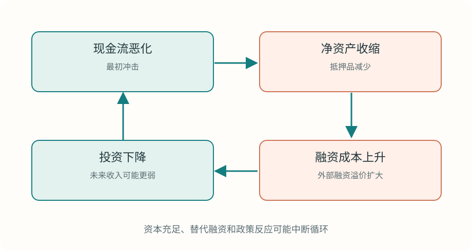

投资与金融加速器：资产负债表如何放大冲击
项目的净现值为正，为什么仍可能无法融资？用折现、托宾 q、抵押品和外部融资溢价揭示投资决策的约束。
净现值为正，为何项目仍可能无法开工？
假设一家企业准备花 100 单位购买设备，预计未来两年各获得 60 单位现金流，没有额外残值。若风险相匹配的年折现率为 10%，净现值 −100+60/1.1+60/1.1²≈4.13；若折现率为 20%，净现值约为 −8.33。这只回答项目的经济价值：真实项目还要计入风险、税收、维护与调整成本，政策短期利率也不能直接当作所有项目的折现率。
托宾 q 不是单凭股价决定投资的自动规则
平均托宾 q 的概念是资本市场对一组已安装资本的价值除以重置这些资本的成本。如果某生产线市场价值为130、替换成本100，则平均 q=1.3。市场对已安装资本较高的估值可能激励新资本形成，但平均 q 和决定新增投资的边际 q 不是同一个可直接观测量。无形资产、垄断利润、调整成本、风险溢价和估值偏差都会使比值失真。
分析实际新增投资需要重新计算新增项目的边际收益和融资条件。市场估值高不意味着所有新设备能获得相同利润，尤其是在投资有建设周期、技术替代与并购成本时。
资产价值下降如何制造额外融资缺口
一项设备投资需要100，企业可用现金30，需要向外部筹措70。假设银行贷款额度不超过现有抵押品市值的80%。当抵押品价值100时，上限80，资金需求70可覆盖；若抵押品价值跌至80，可借金额降为64，出现6单位缺口。即便项目的预期产出未变，也可能推迟开工。
改变抵押品价值、LTV 和自有现金
项目成本固定100。借款额度只按抵押物市价与贷款价值比计算，未加入信用评分等其他真实授信环节。
外部融资溢价如何放大原有的经济冲击
若外部融资比内部资金更贵，差额称为外部融资溢价。金融市场存在信息不对称、契约执行成本及抵押不足时，借款人的净资产可以影响溢价。若盈利或资产价值受到冲击，净资产减弱、融资额度收紧或利差上升，可能令投资下降；投资减少又可能影响未来收入与抵押价值，从而进一步放大先前冲击。

伯南克、格特勒与吉尔克里斯特的金融加速器框架将这种反馈视为可能放大经济周期的机制。它不意味着每次资产价格调整都会出现信用危机：资本充足、长期融资承诺、股权融资和及时的风险对冲，都可能截断反馈。
企业融资溢价和银行信贷供给不是同一个渠道
| 机制 | 主要约束 | 观察指标 | 过度推断 |
|---|---|---|---|
| 企业资产负债表渠道 | 抵押品、净资产与违约风险 | 债务利差、抵押覆盖率 | 资产价格跌5%就令信贷跌5% |
| 银行贷款渠道 | 银行资本、融资成本和审贷能力 | 贷款标准、净息差、资本比率 | 央行准备金多就会自动多贷 |
| 贴现率/现金流渠道 | 未来收入与适当贴现率 | NPV、现金流、资本回报 | 政策利率一变所有项目同幅调整 |
以数据中心、工业设备或住房建设为例，分析投资时需分别估算现金流、折现率、合同期限和融资额度。某个热门行业的估值上升不能单独证明投资合理，也不能直接证明形成泡沫；需要项目层面证据和完整的时间标签。
来源与进一步阅读
所列资料用于核对经济机制及政策制度；图中的金额与参数是构造教学数值，不代表真实经济或最新金融指标。
- NBER — 金融加速器（Bernanke、Gertler、Gilchrist） · 1998 WP6455
- 美联储 — 金融加速器与信用渠道 · Balance-sheet channel
- NBER — 信用传导的银行与企业渠道 · 1995 WP5146